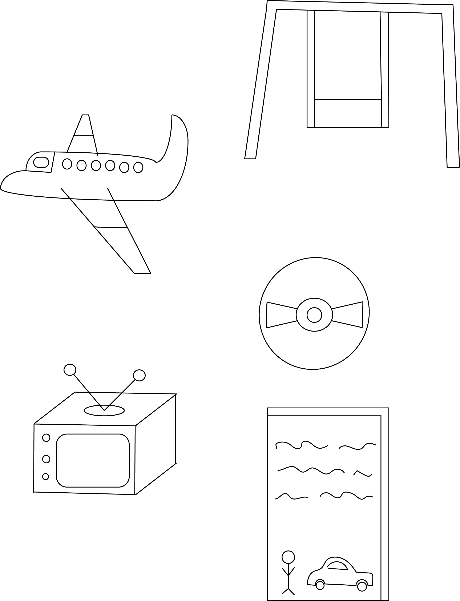

As a child Hyde always had his parents by his side, his parents had decent jobs, his dad worked as a Pilot for planes and his mom worked as a waitress in a restaurant. His parents would always make time for Hyde to spend time together. They would go together in water parks , amusement parks, the movie theaters,etc. Hyde always admired his dads job, he loved planes as a kid and always dreamed of being a pilot, his dad even bought his a toy plane for his birthday and Hyde keeps it in his room in a glass box. Growing up Hyde and his dad bonded over talking about planes and Hyde being able to be a pilot just like his dad and Hyde bonded with his mother over their favorite movies and tv shows.
Find out more about my Sports 